운전면허-학과시험(필기)-2종-소형-이륜(2020년판) (1100-05-00 기출문제)
1과목: 임의 구분
1. 이륜자동차가 신호등 없는 교차로 진입 시 우측 도로에서 교차로로 진입하려는 자전거를 발견하였다. 이때 가장 안전한 운전 방법은?
- 이륜자동차는 자전거보다 속도가 빠르므로 자전거가 양보할 것으로 기대하고 그대로 진행한다.
- 교차로를 먼저 진입하여 신속히 교차로를 빠져나간다.
- 교차로 진입 전 일시정지하여 자전거가 교차로를 빠져나간 후 진행한다.
- 경음기를 사용하여 주위를 환기하고 진행한다.
(정답률: 78%)

2. 이륜자동차 운전 중 전방에 자전거가 가고 있을 때 가장 안전한 운전방법은?
- 자전거는 속도가 느리므로 재빨리 앞지르기한다.
- 자전거가 넘어질 수 있으므로 안전거리를 충분히 유지한다.
- 자전거는 특별히 위험하지 않으므로 크게 신경 쓰지 않아도 된다.
- 경음기를 계속 사용하면서 주행한다.
(정답률: 76%)
3. 이륜자동차 운전 중 전방에 자전거를 끌고 도로를 횡단하는 사람을 발견하였다. 이때 가장 안전한 운전 방법은?
- 자전거가 도로를 무단 횡단하는 것까지 보호할 의무는 없다.
- 안전거리를 두고 일시정지하여 안전하게 횡단할 수 있도록 한다.
- 자전거와 안전거리를 두고 신속하게 통과한다.
- 자전거를 예의 주시하면서 서행한다.
(정답률: 60%)
4. 이륜자동차가 눈길이나 빙판길 주행 중 갑자기 미끄러질 때 가장 안전한 운전 방법은?
- 브레이크를 빨리 밟는다.
- 고단 기어로 변속한다.
- 미끄러지는 방향으로 핸들을 돌린다.
- 미끄러지는 반대 방향으로 핸들을 돌린다.
(정답률: 19%)
5. 이륜자동차가 주행 중 갑자기 발생할 수 있는 강풍이나 돌풍 지역에서 가장 안전한 운전 방법은?
- 속도를 높여 터널 입구, 다리 위 등을 신속히 벗어나야 안전하다.
- 강풍이 불면 이륜자동차는 차로를 이탈할 수 있으므로 바람에 이륜자동차를 맡겨야 한다.
- 우리나라는 강풍이 부는 도로가 없기 때문에 크게 우려할 문제는 아니다.
- 운전자는 절대 감속해야 하며 안전 운전에 집중하여야 한다.
(정답률: 66%)
6. 이륜자동차의 야간 운전이 주간 운전보다 위험성이 높은 이유는?
- 상대적인 속도 감각의 안정으로 이어지는 안전 운전
- 집중력과 위험 대처 능력 향상
- 물체 인식의 신속성과 정확성 향상
- 물체 인식의 어려움과 시인성 저하
(정답률: 60%)
7. 이륜자동차 운행 및 관리점검에 대한 설명이다. 틀린 것은?
- 배기량 125시시 이륜자동차도 번호판을 부착해야 한다.
- 운전자와 동승자 모두 안전모를 착용해야 한다.
- 타이어, 연료상태 등은 항상 출발 후 점검하는 습관을 가지는 것이 좋다.
- 과로 등으로 몸이 피로한 때에는 운전을 하지 않는 것이 좋다.
(정답률: 33%)
8. 이륜자동차 운전 시 안전모를 반드시 착용해야 하는 이유는?
- 운전 중 졸음과 피로감을 줄이기 위하여
- 운전 중 적절한 안전거리를 유지하기 위하여
- 운전 중 보다 넓은 시야 확보를 위하여
- 운전 중 교통사고로부터 머리를 보호하기 위하여
(정답률: 59%)
9. 도로교통법상 편도 2차로 일반도로에서 이륜자동차의 최고 속도는?
- 매시 60 킬로미터 이내
- 매시 70킬로미터 이내
- 매시 80 킬로미터 이내
- 매시 90킬로미터 이내
(정답률: 18%)
10. 도로교통법상 공동위험행위란, 도로에서 ( ) 이상이 공동으로 2대 이상의 자동차등을 정당한 사유 없이 앞뒤로 줄지어 통행하면서 다른 사람에게 위해를 가하는 것을 말한다. 다음 중 ( )에 알맞은 것은?
- 1명
- 2명
- 3명
- 4명
(정답률: 38%)
11. 다음 중 이륜자동차 운전의 특성에 대한 설명이 아닌 것은?
- 운전자의 신체가 외부에 노출되어 있다.
- 회전하고자 하는 방향으로 차체와 운전자의 몸을 기울여서 회전한다.
- 승용자동차에 비해 기동성이 뛰어나다.
- 이륜자동차의 브레이크는 뒷바퀴만 작동된다.
(정답률: 31%)
12. 다음 중 원동기장치자전거 운전 시 유의할 점은?
- 기동성이 부족하다.
- 승용자동차 운전자의 시야에 잘 띄지 않아 사고 위험성이 높다.
- 차체가 크고 무겁다.
- 차체의 균형 잡기가 쉽다.
(정답률: 43%)
13. 이륜자동차 타이어의 단면 형상이 원형구조를 가지고 있는 이유로 가장 맞는 것은?
- 제동할 때 제동력을 높이기 위함이다.
- 차체 균형을 쉽게 잡을 수 있도록 하기 위함이다.
- 회전할 때 원심력과 균형을 유지하기 위함이다.
- 도로 바닥에 넘어지지 않도록 하기 위함이다.
(정답률: 34%)
14. 다음 중 사륜자동차와 비교하였을 때 이륜자동차의 특성으로 볼 수 없는 것은?
- 뛰어난 기동성
- 넓은 시야 확보
- 순간적인 가속도
- 우수한 충격 흡수력
(정답률: 29%)
15. 다음은 이륜자동차가 급정지 시 제동효과를 높이기 위한 힘의 분배에 대한 설명이다. 맞는 것은?
- 앞바퀴에 많이 가해지도록 되어 있다.
- 뒷바퀴에 많이 가해지도록 되어 있다.
- 양쪽 바퀴 서로 균등하게 가해지도록 되어 있다.
- 양쪽 바퀴 서로 힘의 분배를 하지 않도록 되어 있다.
(정답률: 16%)
16. 이륜자동차가 커브 길에서 급제동 할 경우 ( )이 작동하여 미끄러져 넘어지기 쉽다. ( )에 가장 맞는 것은?
- 충격력
- 원심력
- 관성
- 마찰력
(정답률: 21%)
17. 이륜자동차를 운전할 때 차선을 침범하면서 차량 사이로 통행하면 안 되는 이유로 맞는 것은?
- 순간적인 가속도가 떨어지기 때문이다.
- 기동성 확보가 어렵기 때문이다.
- 차체 균형 잡기가 어렵기 때문이다.
- 사륜자동차의 사각지대에 들어가기 쉽기 때문이다.
(정답률: 33%)
18. 다음 중 이륜자동차가 방향을 전환하거나 회전할 때 사용하는 방법으로 가장 중요한 것은?
- 이륜자동차 발판에 발을 놓는 위치
- 브레이크 장치를 조작하는 것
- 기어를 변속하는 것
- 운전자의 몸을 기울이는 것
(정답률: 22%)
19. 다음 중 도로교통법상 이륜자동차 승차용 안전모의 선정기준으로 잘못된 것은?
- 충격에 쉽게 벗어지는 구조일 것
- 충격 흡수성이 있고, 내관통성이 있을 것
- 좌ㆍ우ㆍ상ㆍ하로 충분한 시야를 가질 것
- 인체에 상처를 주지 않는 구조일 것
(정답률: 33%)
20. 다음 중 도로교통법상 이륜자동차 승차용 안전모의 무게기준으로 맞는 것은?
- 1kg 이하
- 1.5kg 이하
- 2kg 이하
- 2.5kg 이하
(정답률: 15%)
2과목: 임의 구분
21. 다음은 이륜자동차 승차용 안전모의 차광용 유리를 선택할 때 주의사항이다. 잘못된 것은?
- 햇빛으로부터 운전자의 시야를 보호하기 위해서는 짙은 색깔이어야 한다.
- 빛의 각도를 왜곡하지 않아야 한다.
- 물체의 거리를 제대로 식별할 수 있어야 한다.
- 안전사고 시 유리 파편으로 인한 상처를 보호하기 위한 안전유리를 선택하여야 한다.
(정답률: 26%)
22. 다음 중 운전자 자신에게 맞는 이륜자동차 승차용 안전모를 선택하는 방법으로 잘못된 것은?
- 규격에 맞는 것을 선택한다.
- 시인성이 좋은 것을 선택한다.
- 용도에 맞는 것을 선택한다.
- 자신의 머리 크기보다 약간 큰 것을 선택한다.
(정답률: 24%)
23. 다음 중 이륜자동차 승차용 안전모 착용에 대한 설명으로 잘못된 것은?
- 안전모는 사고 때 머리 및 얼굴 보호 목적이다.
- 안전모를 착용할 때 턱 끈은 약간 느슨하게 맨다.
- 충격을 흡수하기 때문에 충격 완화에 도움을 준다.
- 안전모는 앞으로 숙여서 착용하거나 뒤로 젖혀서 착용해서는 안 된다.
(정답률: 32%)
24. 이륜자동차 특성에 대한 설명이다. 잘못된 것은?
- 커브 진입할 때 커브의 크기에 맞추어 감속하여야 한다.
- 회전할 때에는 일정한 속도를 유지하여야 한다.
- 안전하게 아웃-아웃-아웃 코스로 주행하여야 한다.
- 회전할 때에는 조향장치를 조정하지 않고, 운전자의 몸을 안쪽으로 기울이는 방법을 사용한다.
(정답률: 17%)
25. 다음은 이륜자동차 운전자의 시야와 시점에 대한 설명이다. 맞는 것은?
- 좌ㆍ우가 길고 수평선이 낮다.
- 위ㆍ아래가 길고, 수평선이 높다.
- 좌ㆍ우가 짧고 수평선이 높다.
- 위ㆍ아래가 짧고, 수평선이 낮다.
(정답률: 13%)
26. 다음은 이륜자동차를 운전할 때 시야와 시점의 분배에 대한 설명이다. 맞는 것은?
- 시점은 가까이 두고, 시야는 좁게 가져야 한다.
- 시점은 멀리 두고, 시야는 넓게 가져야 한다.
- 시점은 멀리 두고, 시야는 좁게 가져야 한다.
- 시점은 가까이 두고, 시야는 넓게 가져야 한다.
(정답률: 17%)
27. 다음은 이륜자동차의 주행위치에 대한 설명이다. 적절하지 못한 것은?
- 주행하는 차로의 가장자리로 주행한다.
- 주행하는 차로의 중앙으로 주행한다.
- 차와 차 사이를 무리하게 끼어들지 않도록 한다.
- 다른 자동차의 운전자 눈에 쉽게 띄는 위치를 선택한다.
(정답률: 12%)
28. 다음은 이륜자동차의 복장에 대한 설명이다. 적절하지 못한 것은?
- 신체를 보호할 수 있고, 눈에 잘 띄는 밝은 계통의 옷을 입는다.
- 손가락 움직임이 편한 가죽 장갑을 착용한다.
- 야간 운전에 대비해 반사체 등을 부착하면 좋다.
- 여름에는 샌들 등 통풍이 좋은 신발을 신고, 겨울에는 목이 긴 가죽소재부츠 등이 좋다.
(정답률: 27%)
29. 이륜자동차 운전자의 올바른 운전 자세에 대한 설명이다. 잘못된 것은?
- 어깨 : 힘을 빼고 등을 바르게 세운다.
- 얼굴 : 턱을 당기고, 눈은 전방을 주시한다.
- 발 : 발판에 올리고, 발끝은 전방을 향하고 발바닥은 지면과 평행되게 한다.
- 무릎 : 양 무릎은 연료 탱크를 기준으로 가볍게 벌린다.
(정답률: 19%)
30. 다음은 이륜자동차의 주행 특성에 대한 설명이다. 잘못된 것은?
- 사륜자동차와 달리 과속방지턱이나 돌 등을 피해서 주행하기 때문에 주행차로 주변을 보는 경향이 있다.
- 사륜자동차와 달리 바람의 영향을 운전자가 직접 받기 때문에 핸들조정에 어려움이 있다.
- 커브 길을 돌 때에는 핸들조작만을 사용하여 방향을 전환한다.
- 커브 길을 돌 때에는 엔진브레이크를 사용하여 미리 속도를 줄인다.
(정답률: 20%)
31. 다음은 이륜자동차의 2인 승차(텐덤, tandem)에 대한 설명으로 적절하지 않는 것은?
- 무게가 증가하여 가속력은 높아지고 원심력은 작아진다.
- 운전자와 동승자의 일체화된 균형이 매우 중요하다.
- 감속할 때 운전자와 동승자의 호흡이 매우 중요하기 때문에 미리 동승자에게 방법을 설명한다.
- 눈이나 비가 와서 노면이 미끄러울 때에는 동승하지 않는다.
(정답률: 23%)
32. 사륜자동차 운전 중 이륜자동차를 만났을 때 주의해야 할 특징이 아닌 것은?
- 실제 속도보다 빠르게 판단할 수 있는 착시현상에 주의하여야 한다.
- 교차로에서 우회전할 때 말려드는 사고의 위험성이 존재함을 이해한다.
- 사륜자동차에 비해 차체가 작아서 사각지대에 들기 쉽다.
- 서로 확인할 수 있는 위치임에도 차체가 작아서 멀리 있다고 판단하기 쉽다.
(정답률: 13%)
33. 단면 형상이 원형 구조인 이륜자동차 타이어의 특성에 대한 설명이다. 가장 적절한 것은?
- 타이어 수명을 연장하기 위해서
- 승차감을 높이기 위해서
- 연비를 높이기 위해서
- 회전 시 원심력과 균형 유지를 위해서
(정답률: 28%)
34. 이륜자동차 코너링 자세 중 포장도로에서 고속주행 시 사용하는 자세는 무엇인가?
- 린 위드(lean with)
- 린 아웃(lean out)
- 린 브레이크(lean brake)
- 린 인(lean in)
(정답률: 9%)
35. 다음 중 이륜자동차 코너링 자세 중 비포장도로에서 사용하는 자세는 무엇인가?
- 린 위드(lean with)
- 린 아웃(lean out)
- 린 브레이크(lean brake)
- 린 인(lean in)
(정답률: 10%)
36. 다음 중 이륜자동차 코너링 자세 중 가장 기본적인 자세로 차체와 같은 각도로 운전자의 몸을 안쪽으로 기울이는 방법은?
- 린 위드(lean with)
- 린 아웃(lean out)
- 린 브레이크(lean brake)
- 린 인(lean in)
(정답률: 12%)
37. 다음 중 이륜자동차의 곡선구간 주행방법으로 잘못된 것은?
- 커브 진입 시 커브의 크기에 맞추어 감속한다.
- 시야는 좁게 하고 시점은 가깝게 한다.
- 회전할 때는 일정한 속도를 유지한다.
- 원심력과 중력과의 균형을 잘 이루어야 한다.
(정답률: 28%)
38. 다음 중 이륜자동차에 사용되는 브레이크의 종류가 아닌 것은?
- 앞바퀴 브레이크
- 뒷바퀴 브레이크
- 배기 브레이크
- 엔진 브레이크
(정답률: 27%)
39. 다음 중 이륜자동차 특성으로 맞는 것은?
- 후사경으로 볼 수 없는 사각지대가 발생하지 않는다.
- 제동할 때에는 엔진 브레이크를 사용할 수 없다.
- 커브 길을 돌 때 속도를 낮출 필요가 없다.
- 속도가 느려지거나 정지하면 넘어지려 한다.
(정답률: 16%)
40. 다음은 이륜자동차 특성에 대한 설명이다. 잘못된 것은?
- 이륜자동차 운전자의 복장은 눈에 잘 띄는 소재로 구성된 옷과 가죽제품의 장갑과 신발 및 보호대를 갖추어야 한다.
- 이륜자동차 브레이크는 앞바퀴와 뒷바퀴가 동시에 작동되도록 되어 있다.
- 사륜자동차보다 뛰어난 기동성과 넓은 시야를 확보할 수 있다.
- 보편적으로 사륜자동차에 비해 순간적인 가속도가 우수한 편이다.
(정답률: 23%)
3과목: 임의 구분
41. 다음 안전표지가 뜻하는 것은?
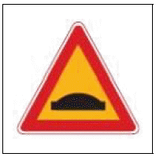
- 노면이 고르지 못함을 알리는 것
- 터널이 있음을 알리는 것
- 과속방지턱이 있음을 알리는 것
- 미끄러운 도로가 있음을 알리는 것
(정답률: 30%)
42. 다음 안전표지에 대한 설명으로 맞는 것은?
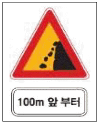
- 100미터 앞부터 낭떠러지 위험 구간이므로 주의
- 100미터 앞부터 공사 구간이므로 주의
- 100미터 앞부터 강변도로이므로 주의
- 100미터 앞부터 낙석 우려가 있는 도로이므로 주의
(정답률: 23%)
43. 다음 안전표지에 대한 설명으로 맞는 것은?
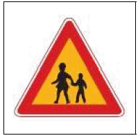
- 유치원 통원로이므로 자동차가 통행할 수 없음을 나타낸다.
- 어린이 또는 유아의 통행로나 횡단보도가 있음을 알린다.
- 학교의 출입구로부터 2킬로미터 이후 구역에 설치한다.
- 어린이 또는 유아가 도로를 횡단할 수 없음을 알린다.
(정답률: 26%)
44. 다음 안전표지가 있는 경우 안전 운전방법은?
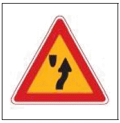
- 도로 중앙에 장애물이 있으므로 우측 방향으로 주의하면서 통행한다.
- 중앙 분리대가 시작되므로 주의하면서 통행한다.
- 중앙 분리대가 끝나는 지점이므로 주의하면서 통행한다.
- 터널이 있으므로 전조등을 켜고 주의하면서 통행한다.
(정답률: 19%)
45. 다음 안전표지가 뜻하는 것은?
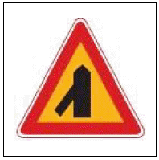
- ㅓ 자형 교차로가 있음을 알리는 것
- Y 자형 교차로가 있음을 알리는 것
- 좌합류 도로가 있음을 알리는 것
- 우선 도로가 있음을 알리는 것
(정답률: 23%)
46. 다음 안전표지가 의미하는 것은?
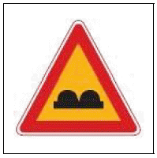
- 편도 2차로의 터널
- 연속 과속방지턱
- 노면이 고르지 못함
- 굴곡이 있는 잠수교
(정답률: 10%)
47. 다음 안전표지가 의미하는 것은?
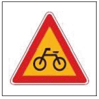
- 자전거 통행이 많은 지점
- 자전거 횡단도
- 자전거 주차장
- 자전거 전용도로
(정답률: 10%)
48. 다음 안전표지가 있는 도로에서 올바른 운전방법은?
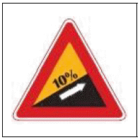
- 눈길인 경우 고단 변속기를 사용한다.
- 눈길인 경우 가급적 중간에 정지하지 않는다.
- 평지에서 보다 고단 변속기를 사용한다.
- 짐이 많은 차를 가까이 따라간다.
(정답률: 14%)
49. 다음 안전표지가 있는 도로에서의 안전운전 방법은?
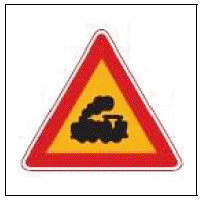
- 신호기의 진행신호가 있을 때 서서히 진입 통과한다.
- 차단기가 내려가고 있을 때 신속히 진입 통과한다.
- 철도건널목 진입 전에 경보기가 울리면 가속하여 통과한다.
- 차단기가 올라가고 있을 때 기어를 자주 바꿔가며 통과한다.
(정답률: 18%)
50. 다음 안전표지의 뜻으로 맞는 것은?
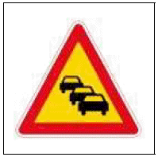
- 일렬주차표지
- 상습정체구간표지
- 야간통행주의표지
- 차선변경구간표지
(정답률: 20%)
51. 다음 안전표지에 대한 설명으로 맞는 것은?
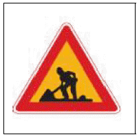
- 폭설구간 주의표지이다.
- 도로공사중 주의표지이다.
- 보행자보호구역 주의표지이다.
- 낙석도로 주의표지이다.
(정답률: 27%)
52. 다음 안전표지에 대한 설명으로 맞는 것은?
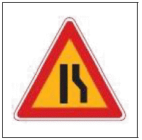
- 좌측방 통행 주의표지이다.
- 우합류 도로 주의표지이다.
- 도로폭 좁아짐 주의표지이다.
- 우측차로 없어짐 주의표지이다.
(정답률: 10%)
53. 다음 안전표지에 대한 설명으로 맞는 것은?
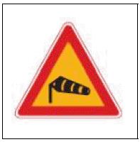
- 안개가 자주 끼는 도로에 설치한다.
- 철새의 출현이 많은 도로에 설치한다.
- 교량이나 강변 등 횡풍의 우려가 있는 도로에 설치한다.
- 사람의 통행이 많은 도로에 설치한다.
(정답률: 29%)
54. 다음 안전표지가 설치된 도로에서 가장 안전한 운전방법은?
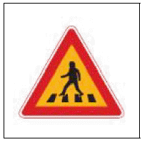
- 횡단보도가 설치되어 있으므로 운전자는 속도를 높여 신속하게 주행한다.
- 횡단보도 200미터 전에 설치되어 있어 경음기를 울리면서 주행한다.
- 보행자의 횡단을 금지하는 표지로 운전자는 안전하게 주행한다.
- 횡단보도 주의표지로 운전자는 보행자의 안전에 유의하여야 한다.
(정답률: 23%)
55. 다음 안전표지의 뜻으로 맞는 것은?
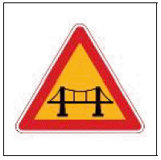
- 철길표지
- 교량표지
- 높이제한표지
- 문화재보호표지
(정답률: 24%)
56. 다음 안전표지의 뜻으로 맞는 것은?
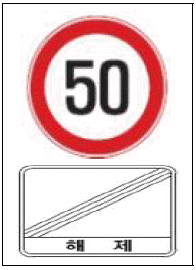
- 최저 속도 제한을 해제
- 최고 속도 매시 50킬로미터의 제한을 해제
- 50미터 앞부터 속도 제한을 해제
- 차간거리 50미터를 해제
(정답률: 19%)
57. 다음 안전표지가 있는 도로에서의 운전 방법으로 맞는 것은?
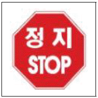
- 다가오는 차량이 있을 때에만 정지하면 된다.
- 도로에 차량이 없을 때에도 정지해야 한다.
- 어린이들이 길을 건널 때에만 정지한다.
- 적색등이 켜진 때에만 정지하면 된다.
(정답률: 22%)
58. 다음 규제표지가 의미하는 것은?
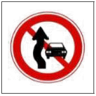
- 커브길 주의
- 자동차 진입금지
- 앞지르기 금지
- 과속방지턱 설치 지역
(정답률: 20%)
59. 다음 안전표지에 대한 설명으로 가장 옳은 것은?
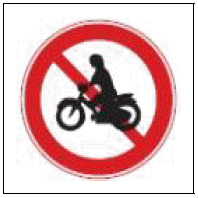
- 이륜자동차 및 자전거의 통행을 금지한다.
- 이륜자동차 및 원동기장치자전거의 통행을 금지한다.
- 이륜자동차와 자전거 이외의 차마는 언제나 통행할 수 있다.
- 이륜자동차와 원동기장치자전거 이외의 차마는 언제나 통행할 수 있다.
(정답률: 21%)
60. 다음 안전표지에 관한 설명으로 맞는 것은?
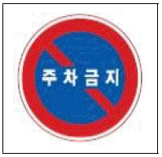
- 화물을 싣기 위해 잠시 주차할 수 있다.
- 승객을 내려주기 위해 일시적으로 정차할 수 있다.
- 주차 및 정차를 금지하는 구간에 설치한다.
- 이륜자동차는 주차할 수 있다.
(정답률: 4%)
4과목: 임의 구분
61. 다음 안전표지에 대한 설명으로 맞는 것은?
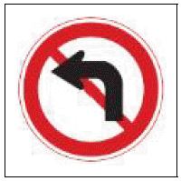
- 좌회전 지시표지이다.
- 좌측차로 없어짐 주의표지이다.
- 좌로굽은 도로 주의표지이다.
- 좌회전금지 규제표지이다.
(정답률: 26%)
62. 다음 안전표지에 대한 설명으로 맞는 것은?
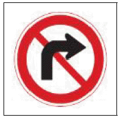
- 우회전 금지 규제표지이다.
- 우로굽은 도로 주의표지이다.
- 우측차로 없어짐 주의표지이다.
- 우회전 지시표지이다.
(정답률: 27%)
63. 다음 안전표지에 대한 설명으로 맞는 것은?
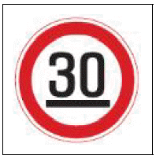
- 차간거리 확보 규제표지이다.
- 30번 고속도로 안내표지이다.
- 30번 국도 안내표지이다.
- 최저 속도 제한 규제표지이다.
(정답률: 20%)
64. 다음 안전표지에 대한 설명으로 맞는 것은?
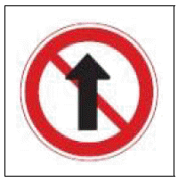
- 좌ㆍ우회전우선 규제표지이다.
- 직선도로 규제표지이다.
- 일렬주행금지 규제표지이다.
- 직진금지 규제표지이다.
(정답률: 21%)
65. 다음 안전표지에 대한 설명으로 맞는 것은?
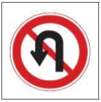
- 유턴금지 규제표지이다.
- 좌회전금지 규제표지이다.
- 직진금지 규제표지이다.
- 유턴 지시표지이다.
(정답률: 27%)
66. 다음 안전표지에 대한 설명으로 맞는 것은?
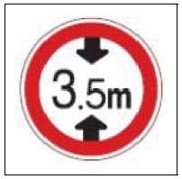
- 차폭 제한 규제표지이다.
- 차 높이 제한 규제표지이다.
- 차간거리 확보 규제표지이다.
- 차 길이 제한 규제표지이다.
(정답률: 25%)
67. 다음 안전표지에 대한 설명으로 맞는 것은?
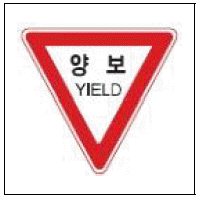
- 긴급자동차 우선 지시표지이다.
- 도로가 좁아지거나 합류하는 지점 등에 설치한다.
- 횡단보도 직전에 설치하는 노면표시이다.
- 보행자우선 지시표지이다.
(정답률: 18%)
68. 다음 안전표지가 설치된 도로에서 가장 안전한 운전방법은?
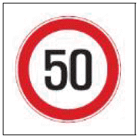
- 전방 50미터 위험물 규제표지로 주의하면서 주행한다.
- 앞차와 추돌방지 차간거리 규제표지로 50미터이상 차간거리를 확보한다.
- 최저 속도 제한 규제표지로 시속 50킬로미터 이상으로 주행한다.
- 최고 속도 제한 규제표지로 시속 50킬로미터 이하로 주행한다.
(정답률: 21%)
69. 다음 안전표지에 대한 설명으로 맞는 것은?
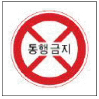
- 보행자는 통행할 수 있다.
- 보행자뿐만 아니라 모든 차마는 통행할 수 없다.
- 도로의 중앙 또는 좌측에 설치한다.
- 이륜자동차는 통행할 수 있다.
(정답률: 24%)
70. 다음 안전표지에 대한 설명으로 맞는 것은?
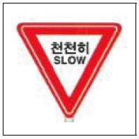
- 도로 공사 중을 알리는 주의표지이다.
- 비탈길의 고갯마루 부근 또는 도로가 구부러진 부근 등에 설치한다.
- 교차로를 알리는 주의표지이다.
- 철길 건널목을 알리는 주의표지이다.
(정답률: 23%)
71. 다음 안전표지가 의미하는 것은?
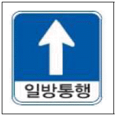
- 좌측도로는 일방통행 도로이다.
- 우측도로는 일방통행 도로이다.
- 모든 도로는 일방통행 도로이다.
- 직진도로는 일방통행 도로이다.
(정답률: 20%)
72. 다음 안전표지가 의미하는 것은?
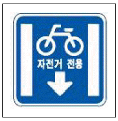
- 자전거 전용차로이다.
- 자동차 전용도로이다.
- 자전거 우선통행 도로이다.
- 자전거 통행금지 도로이다.
(정답률: 18%)
73. 다음 안전표지의 뜻으로 맞는 것은?
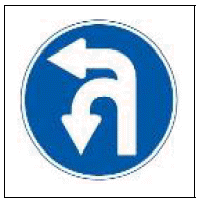
- 이중굽은도로표지
- 좌회전 및 유턴표지
- 유턴우선표지
- 좌회전우선표지
(정답률: 22%)
74. 다음 안전표지에 대한 설명으로 맞는 것은?
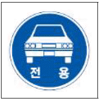
- 고장차량 전용도로 지시표지이다.
- 자동차 전용도로 지시표지이다.
- 승용차 전용도로 지시표지이다.
- 긴급차량 전용도로 지시표지이다.
(정답률: 18%)
75. 다음 안전표지에 대한 설명으로 맞는 것은?
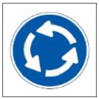
- 우측면통행 지시표지이다.
- 우회로 지시표지이다.
- 회전교차로 지시표지이다.
- 타원형 유도 지시표지이다.
(정답률: 27%)
76. 다음 안전표지에 대한 설명으로 맞는 것은?
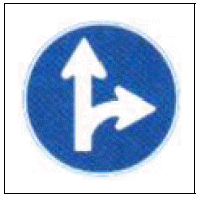
- 직진 및 우회전 지시표지이다.
- 회전교차로 지시표지이다.
- 좌회전 지시표지이다.
- 우회로 지시표지이다.
(정답률: 27%)
77. 다음 안전표지에 대한 설명으로 맞는 것은?
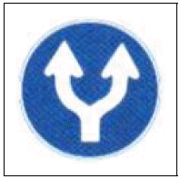
- 양측방 통행 지시표지이다.
- 양측방 통행 금지 지시표지이다.
- 중앙 분리대 시작 지시표지이다.
- 중앙 분리대 종료 지시표지이다.
(정답률: 19%)
78. 다음 안전표지에 대한 설명으로 맞는 것은?
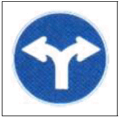
- 양측방 통행 지시표지이다.
- 좌ㆍ우회전 지시표지이다.
- 중앙 분리대 시작 지시표지이다.
- 중앙 분리대 종료 지시표지이다.
(정답률: 17%)
79. 다음 안전표지가 설치된 도로에서 가장 안전한 운전방법은?
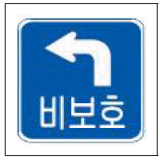
- 진행방향 신호가 적색인 경우에만 좌회전할 수 있다.
- 진행방향 신호에 관계없이 좌회전할 수 없다.
- 황색 신호가 있는 경우에만 좌회전할 수 있다.
- 진행신호 시 반대방면에서 오는 차량에 방해가 되지 않게 좌회전할 수 있다.
(정답률: 20%)
80. 다음 안전표지에 대한 설명으로 맞는 것은?
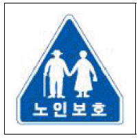
- 노인보호구역(노인보호구역안)이 시작되는 지점에 설치한다.
- 노인보호구역의 도로 우측에만 설치한다.
- 노인보호구역의 도로 좌측에만 설치한다.
- 도로교통법상 노인은 60세 이상인 사람을 말한다.
(정답률: 23%)
5과목: 임의 구분
81. 다음 노면표시가 의미하는 것은?
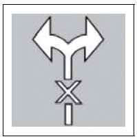
- 운전자는 좌ㆍ우회전을 할 수 없다.
- 운전자는 좌우를 살피면서 운전해야 한다.
- 운전자는 좌ㆍ우회전만 할 수 있다.
- 운전자는 우회전만 할 수 있다.
(정답률: 22%)
82. 다음 노면표시가 의미하는 것은?
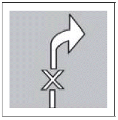
- 우회전 금지표시로 유턴할 수 없다.
- 우회전 금지표시로 우회전할 수 없다.
- 우측 통행금지표시로 직진할 수 없다.
- 좌우회전 금지표시로 좌우회전할 수 없다.
(정답률: 23%)
83. 다음 안전표지에 대한 설명으로 맞는 것은?
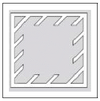
- 정차금지지대 노면표시이다.
- 안전지대 노면표시이다.
- 직각주차 노면표시이다.
- 직각횡단보도 노면표시이다.
(정답률: 11%)
84. 다음 안전표지에 대한 설명으로 맞는 것은?
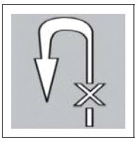
- 유턴금지 노면표시로 유턴할 수 없다.
- 좌회전금지 노면표시로 좌회전할 수 없다.
- 유턴 노면표시로 순서에 따라서 안전하게 유턴할 수 있다.
- 유턴금지 노면표시로 이륜자동차는 유턴할 수 있다.
(정답률: 25%)
85. 다음 안전표지에 대한 설명으로 맞는 것은?
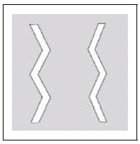
- 어린이보호구역, 횡단보도 주변 등 서행하여야 할 장소에 설치한다.
- 미끄러운 도로 주의표지이다.
- 고원식횡단보도 노면표시이다.
- 원동기장치자전거는 서행하면서 차로변경을 할 수 있다.
(정답률: 13%)
86. 도로 구간 가장자리 또는 연석 측면에 황색실선으로 설치한 선의 뜻으로 맞는 것은?
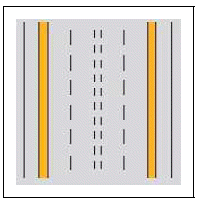
- 주차금지
- 정차금지
- 정차ㆍ주차금지
- 진로변경금지
(정답률: 19%)
87. 차도와 보도의 구분이 없는 도로에 있어서 도로의 외측에 백색실선으로 설치하는 노면표시는?
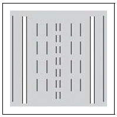
- 길 가장자리구역선 표시
- 유턴구역선 표시
- 주차금지 표시
- 진로변경 제한선 표시
(정답률: 19%)
88. 다음 유턴구역선 표시는 편도 ( ) 이상의 도로에서 설치할 수 있다. ( )안에 설치기준으로 맞는 것은?
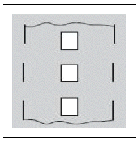
- 1차로
- 2차로
- 3차로
- 4차로
(정답률: 12%)
89. 다음 좌회전 유도차로 표시는 교차로에서 좌회전하려는 차량이 다른 교통에 방해가 되지 않도록 ( )등화 동안 교차로 안에서 대기하는 지점을 표시하는 노면표시이다. ( )안에 등화로 맞는 것은?
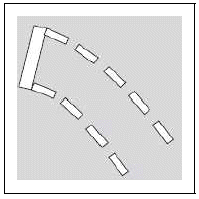
- 적색
- 황색
- 녹색
- 녹색 화살표
(정답률: 11%)
90. 다음 노면표시가 있을 때 좌회전할 수 있는 등화로 맞는 것은?
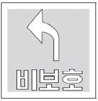
- 적색
- 황색
- 녹색
- 모든 신호
(정답률: 15%)
91. 다음 안전표지에 대한 설명으로 맞는 것은?
- 100미터 앞부터 승합차 전용차로
- 100미터 앞부터 버스 전용차로
- 100미터 앞부터 다인승 전용차로
- 100미터 앞부터 자동차 전용차로
(정답률: 26%)
92. 다음 안전표지에 대한 설명으로 맞는 것은?
- 진행방향 신호가 적색인 경우 횡단할 수 있다.
- 진행방향 신호가 적색인 경우 유턴할 수 있다.
- 진행방향 신호가 적색인 경우 우회전할 수 있다.
- 진행방향 신호가 적색인 경우 좌회전할 수 있다.
(정답률: 25%)
93. 다음 안전표지에 대한 설명으로 맞는 것은?
- 일요일ㆍ공휴일은 유턴할 수 있다.
- 일요일ㆍ공휴일 이외 날은 유턴할 수 있다.
- 일요일ㆍ공휴일은 유턴할 수 없다.
- 어떠한 경우에도 유턴할 수 없다.
(정답률: 16%)
94. 다음 안전표지에 대한 설명으로 맞는 것은?
- 자동차와 이륜자동차는 21:00~07:00 통행 금지표지
- 자동차와 이륜자동차 및 원동기장치자전거는 08:00~20:00 통행 금지표지
- 자동차와 이륜자동차 및 보행자는 08:00~20:00 통행 금지표지
- 자동차와 자전거는 08:00~20:00 통행 금지표지
(정답률: 21%)
95. 다음 안전표지가 설치된 도로에서 가장 안전한 운전방법은?
- 전방에 양측방 통행 도로가 있으므로 감속 운행한다.
- 전방에 장애물이 있으므로 감속 운행한다.
- 전방에 중앙 분리대가 시작되는 도로가 있으므로 감속 운행한다.
- 전방에 두 방향 통행 도로가 있으므로 감속 운행한다.
(정답률: 13%)
96. 다음 안전표지가 의미하는 것으로 맞는 것은?
- 전방 200미터부터 노인보호구역이 시작됨을 알리는 것
- 후방 200미터부터 노인보호구역이 시작됨을 알리는 것
- 노인보호 안전표지로부터 200미터 구간까지 노인보호구역임을 알리는 것
- 전방 200미터 구간부터 노인보호구역이 종료됨을 알리는 것
(정답률: 10%)
97. 다음 안전표지가 의미하는 것으로 맞는 것은?
- 자동차전용도로에서 차로를 잘 지키도록 보조표지인 차량한정표지를 사용한 것임
- 상습정체구간에서 차로를 잘 지키도록 보조표지인 교통규제표지를 사용한 것임
- 철길건널목에서는 차로를 잘 지키도록 보조표지인 직진표지를 사용한 것임
- 승용자동차전용도로임으로 차로를 잘 지키도록 보조표지인 통행우선표지를 사용한 것임
(정답률: 19%)
98. 다음 중 안전표지에 의하여 주차할 수 있는 시간으로 맞는 것은?
- 08시부터 09시까지
- 11시부터 12시까지
- 19시부터 20시까지
- 21시부터 06시까지
(정답률: 22%)
99. 다음 안전표지가 의미하는 것은?
- 전방 50미터 지점에 회전교차로가 있다는 표시
- 전방 50미터 지점에 좌회전이 금지된 지역에서 우회도로로 통행할 수 있다는 표시
- 전방 50미터 지점에 양측방으로 통행할 수 있다는 표시
- 전방 50미터 지점에 철길건널목이 있다는 표시
(정답률: 23%)
100. 다음 안전표지가 의미하는 것은?
- 터널 안 노폭이 3.5미터를 알리는 표시
- 터널 안 노폭이 3.5미터보다 넓다는 것을 알리는 표시
- 3.5미터 전방에 터널이 있다는 표시
- 터널 안 높이가 3.5미터임을 알리는 표시
(정답률: 16%)